Sixteen visual systems from one 1976 issue, rebuilt as working instruments. Open a card, change its rules, and make a new image from the underlying mechanism.
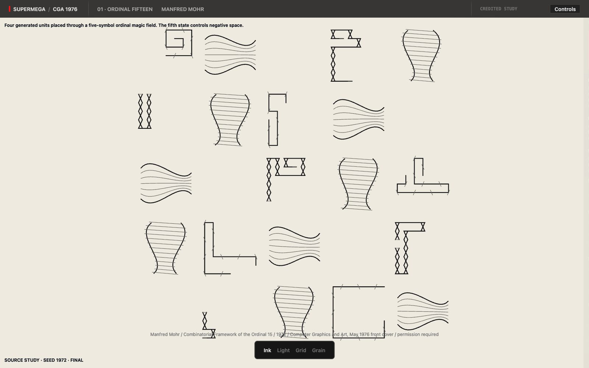
Manfred Mohrfour generated units placed through a five-symbol magic field 02 Barbadillo ModulesOpen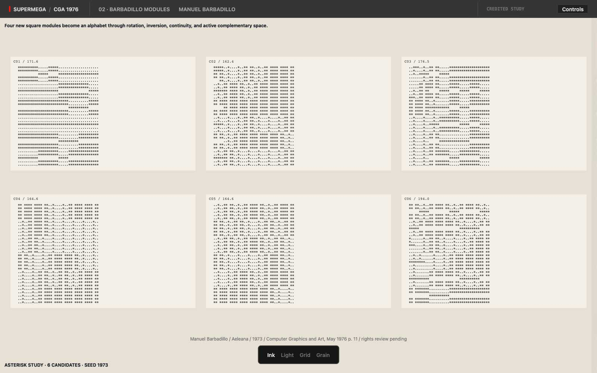
Manuel Barbadilloa module alphabet joined by rotation, inversion, and continuity 03 Cubic LimitOpen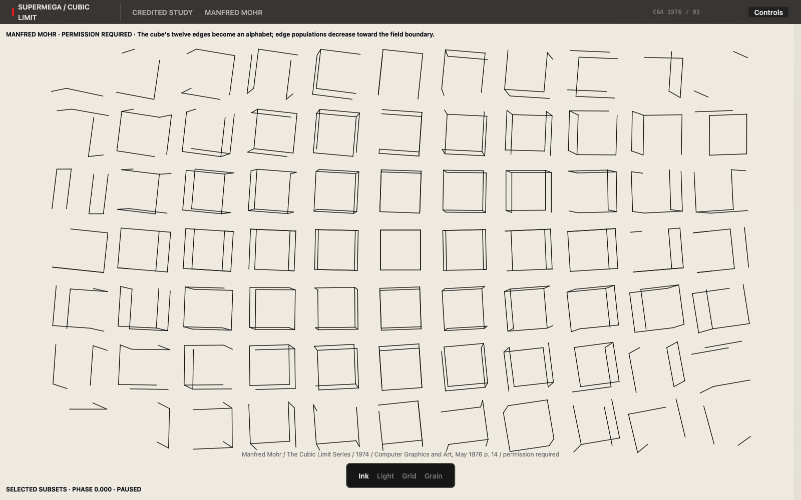
Manfred Mohrtwelve cube edges become a radial field of projected signs 04 Cube VariationsOpen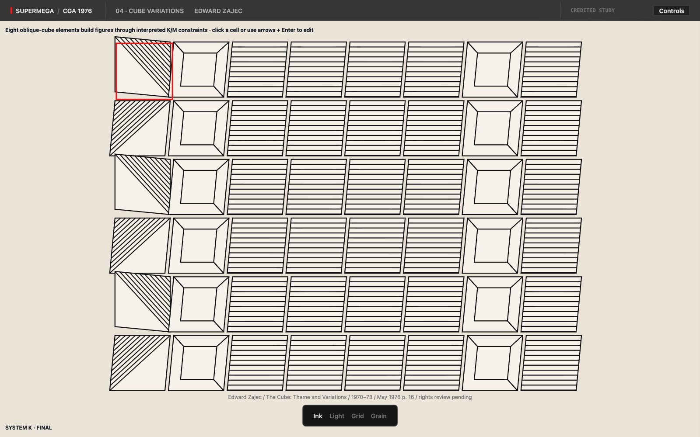
Edward Zajeceight elements assemble through formative, connective, and additive rules 05 Sýkora MatrixOpen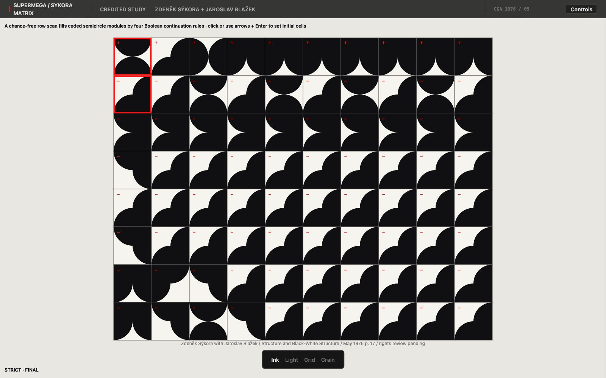
Zdeněk Sýkora + Jaroslav Blažeka chance-free row scan fills modules through four Boolean rules 06 Nine-Square VariationsOpen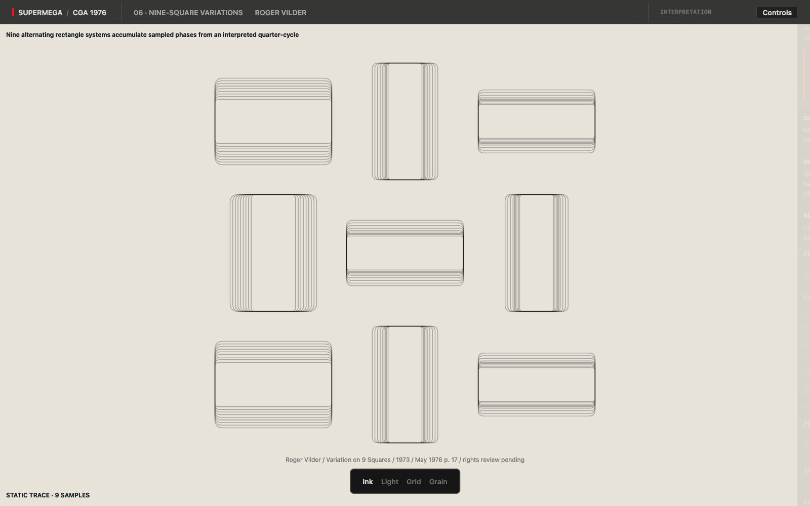
Roger Vildernested rectangles cycle between horizontal and vertical states 07 Cube Series ProjectionOpen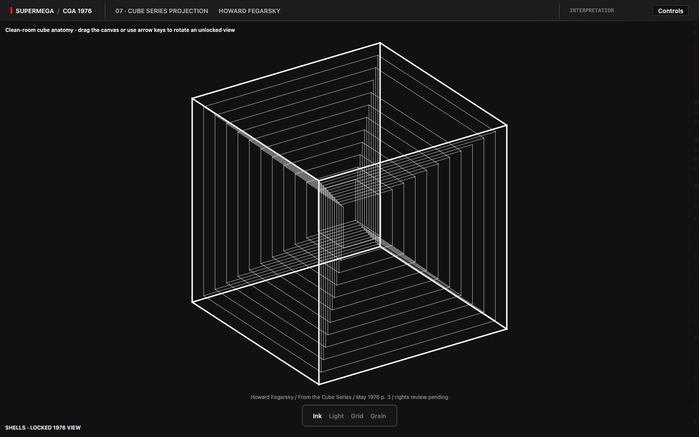
Howard Fegarskycube shells and slice planes form one projected structure 08 Kubus PermutatorOpen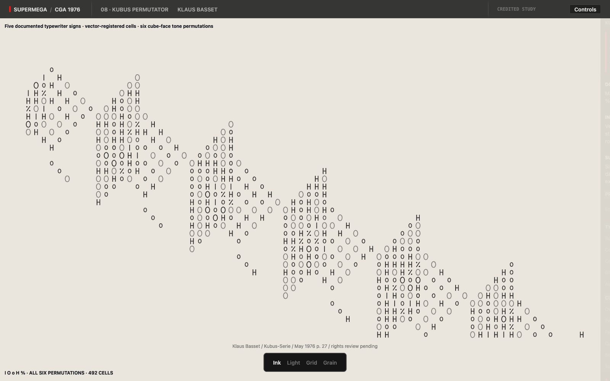
Klaus Bassetfive typewriter signs overstrike into permuted cube faces 09 Kawano MosaicOpen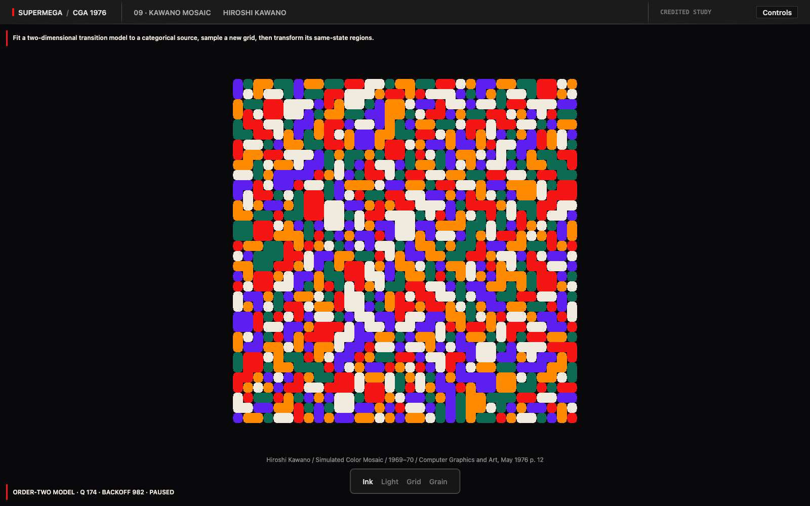
Hiroshi Kawanoa Markov-style neighborhood model grows color states 10 Random SquaresOpen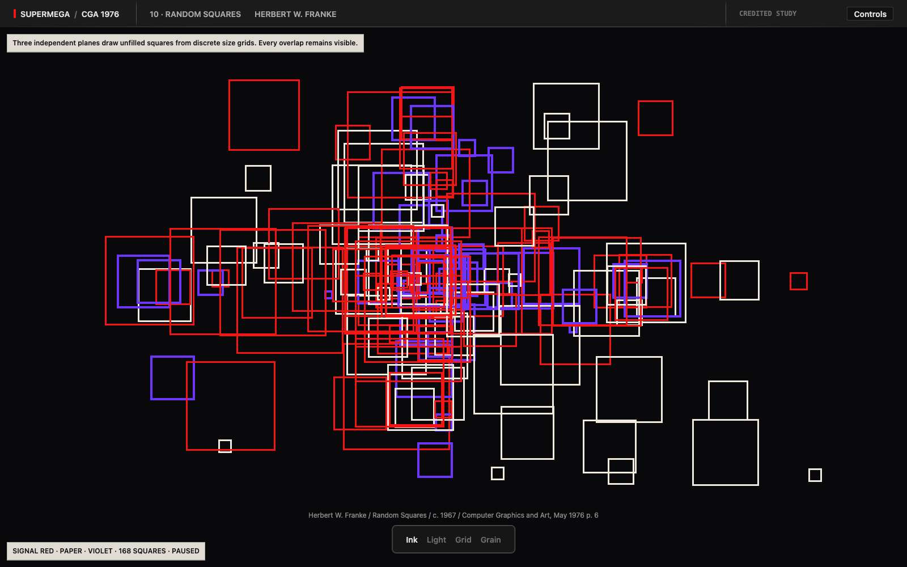
Herbert W. Frankethree layers place outline squares from discrete size sets 11 Text Image MatrixOpen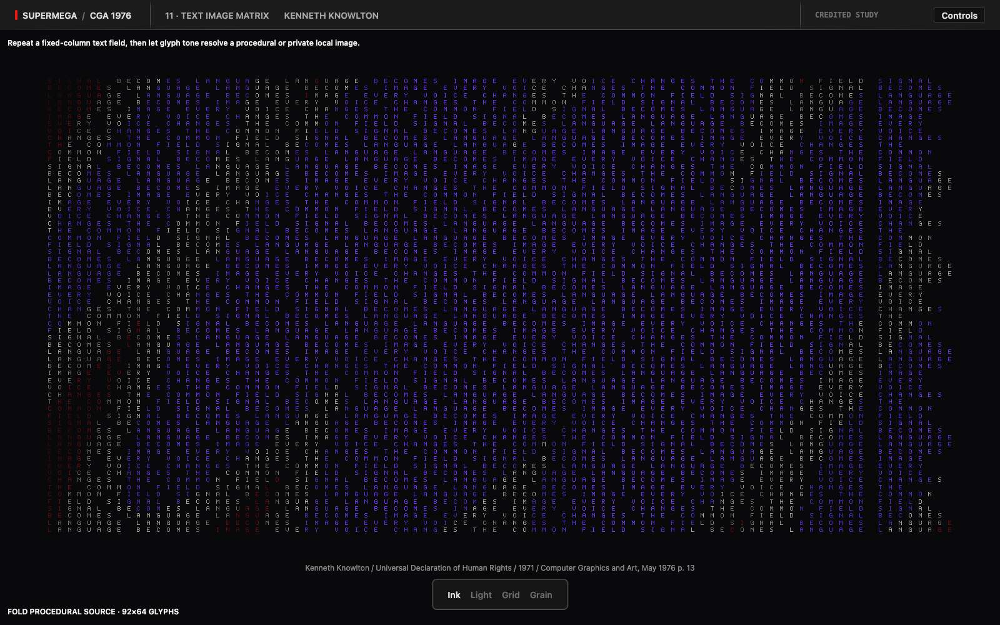
Kenneth Knowltonlines of text reconstruct a source image through density 12 Harmonic StoryOpen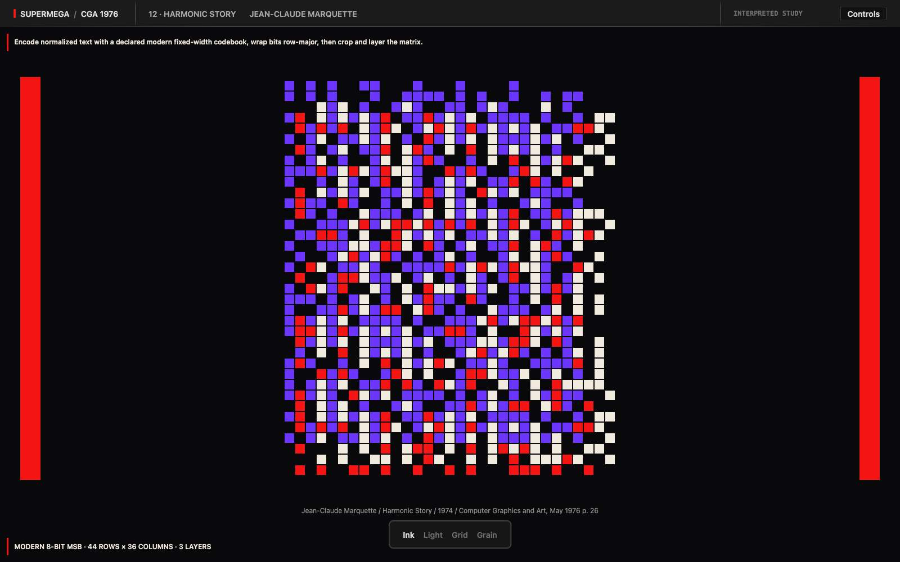
Jean-Claude Marquettetext becomes binary rhythms, bands, gaps, and color sequences 13 Colored Matrix GrowthOpen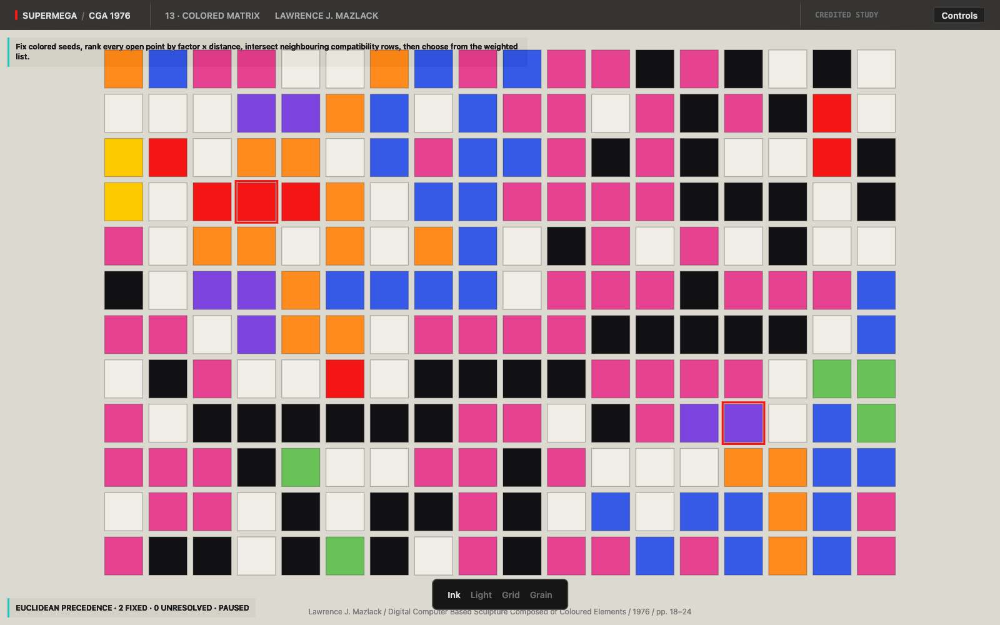
Lawrence J. Mazlackcompatibility and weighted choice grow a field from seed points 14 Luminous SculptureOpen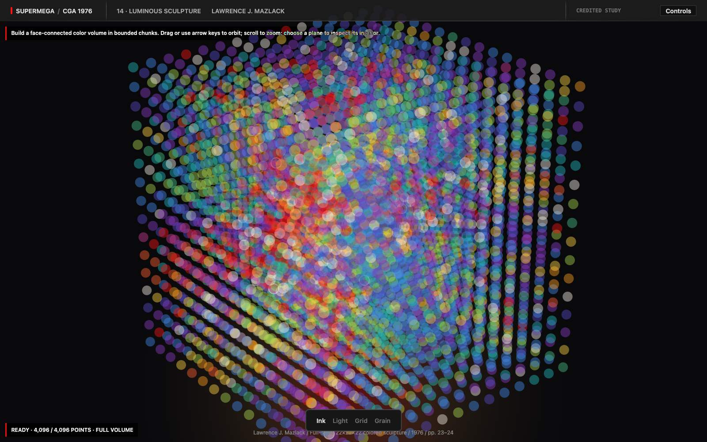
Lawrence J. Mazlackmatrix growth expands into illuminated translucent volume 15 Tangent Polygon TrailsOpen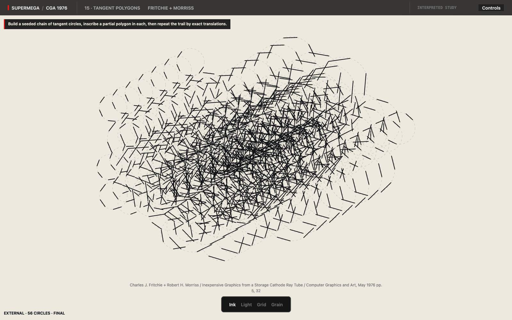
Fritchie + Morrisstangential circles carry polygon segments through a plotter trail 16 Concentric RosettesOpen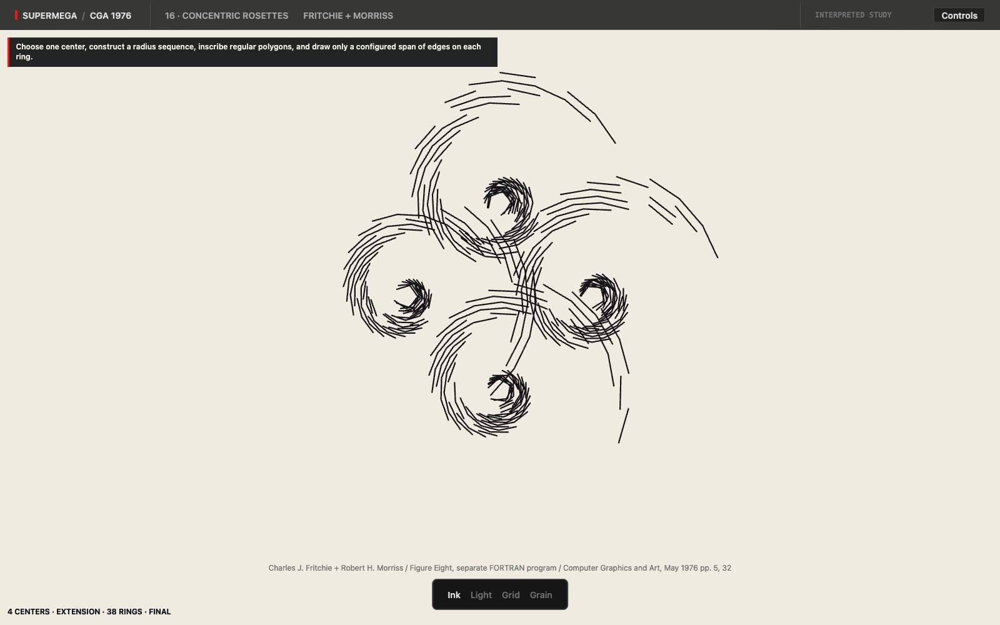
Fritchie + Morrisspolygon edges rotate and drift across concentric ringsStudies, not reproductions. Every image here is generated by new code written from the published descriptions. No magazine scans ship, and no original artwork is traced.
The mechanisms belong to the artists named on each card. Where the 1976 text left a constant unstated, the interpretation is ours and is marked as such inside the instrument. If you hold rights to any of this work and want a study changed or removed, write to hello@supermega.design.